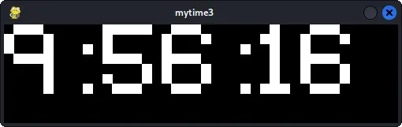
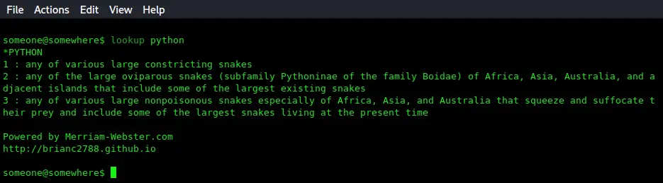
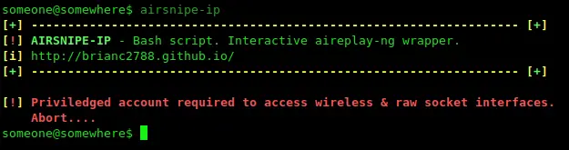
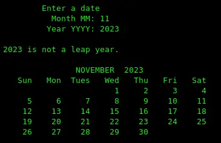
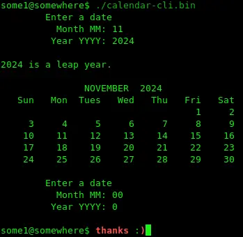

Fun, fast port scanner written in golang. Not super robust since I'm still using golang's
standard &dquote;net&dquote; library, but it's actually decent enough for maybe some
preliminary service scanning. Script kiddies beware; this scanner will complete
the TCP 3-way handshake to determine if a port is listening or not. It also does not
work with SOCKS proxies, but will work with HTTP proxies (tested with TOR & several,
low-quality HTTP proxy servers).
mytime3

A digital clock GUI leveraging the time module & pygame. What's great about
pygame is that it uses SDL2; a development library native to the C language. SDL2
is open-source software that allows developers to create windows and graphical
applications for all major operating systems (desktop & mobile). Without much
effort, I was able to use pygame to create this Python application that I was able
to test on Linux & Windows 10. Pygame provides an excellent entry point for
beginners looking to get into GUI or game creation. I'd also like to mention the
very-cool, open Pixeltype font.
Python 3 - lookup

I get so much use out of this script, it isn't even funny! For so long, I had
gotten used to just typing "define (word here)" in google to look up definitions
for words. As a matter of fact, originally, I was planning to scrape those exact
definitions from google's website, but ended up going with Merriam-Webster's
online offering. The script itself isn't all that impressive and I am always
coming back to it. However, it wasn't really written with much extensibility
in mind. Rather than improving it, I find myself wanting to do it even better
justice by rewriting it from scratch either with Python or another language.
Airsnipe-ip

Kinda my own, crappy, script-kiddie wrapper around aireplay-ng; a member of the aircrack-ng
suite. I'm talking about stuff like airmageddon & wifite (complete with
tacky termcolor output and interactive user-input). Honestly, how do you look yourself in the
mirror if you can't put your nic in promiscuous or monitor mode without a wrapper around a
shell script? Ha, j0kez. Not even sure why I posted this -- maybe just to show how easy it is?
Calendar-cli


Using some well-known math formulas, this console app generates an accurate
representation of any given month and print it to the screen. I wrote this quite
a few years ago when I still favored prompting the user for input over command
line arguments. It wasn't until a bit later that I discovered bash and
never looked back. The user enters the month and year of their choice and the app
prints an accurate, visual representation of that month. It also indicates if that
year is a leap year. Kind of boring, honestly -- Lol.